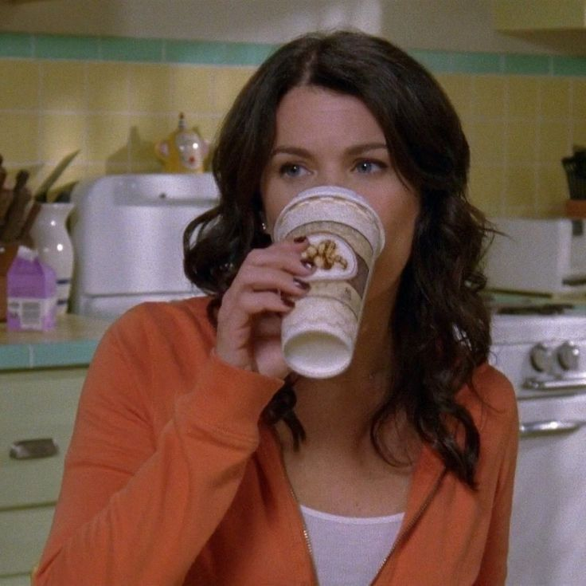

Sobre Mim

A Independência de Lorelai Gilmore
Lorelai Gilmore é um exemplo forte de independência feminina. Desde jovem, ela mostrou uma vontade imensa de trilhar seu próprio caminho, mesmo que isso significasse romper com as expectativas de sua família rica e tradicional.
O Relacionamento de Lorelai com Rory
Um dos aspectos mais marcantes da personagem Lorelai Gilmore é sua relação com sua filha, Rory. Diferente de muitos relacionamentos tradicionais entre mãe e filha, as duas desenvolveram uma amizade profunda e cheia de cumplicidade.

Lorelai Gilmore e seu Amor Incondicional por Café
Lorelai Gilmore, uma das personagens mais icônicas da televisão, é quase sinônimo de café.
A Pousada de Lorelai Gilmore: Dragonfly Inn
Um dos maiores sonhos de Lorelai Gilmore sempre foi administrar sua própria pousada, e ela conseguiu realizá-lo com a abertura da Dragonfly Inn.
Entre em contato
© Copyright 2025. Produzido por Lívia Marcondes